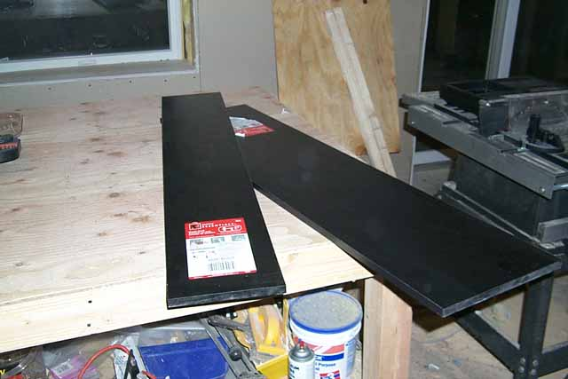
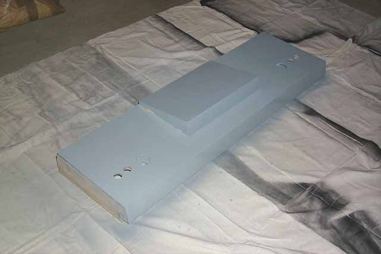
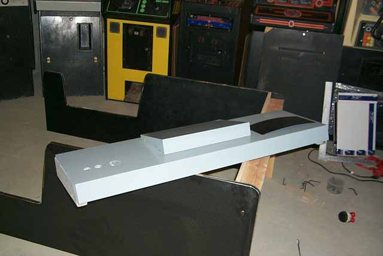
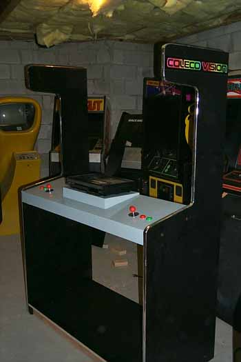

Back from another shopping
spree at Home Depot. Picked up those "Cheat Materials"
I mentioned previously.... basically I've picked up some pre-fab'ed
black laminate shelving. These will be used for the Television
shelf and for the top support cross-member. Two
additional shelves will be just that... shelves, they will be for the display
case area underneath the control panel....

So,
the control panel has been laminated, using the screw holes drilled out
previously the pedestal has been screwed into place.
So, time for some painting. Place some tape over the joystick
base openings so no spray paint goes down the hole and causes problems
with the assembly or the contacts. Using glossy
grey paint give the control panel a full covering. Wait about
10-15 mins. then spray another coating and repeat once more.
Three coats should be sufficient for wear and tear. (Remember, people
with watches, jewelry and just constant use will wear down the paint and
giving it three solid coats should last for some time and if needed, down
the road you can always disassembly it and give it a "tune-up" coating)

Now its time to mount the
control panel to the side panels which have already been assembled to the
base. (Looks like I forget the front black laminate on the
base.... more work to do! oh well....) Well, I'll take care
of the base laminate later. Test fit the control panel, align
the angles and repeating the previous steps for the base, drill out for
the hardware.

Once the hardware is mounted
and the control panel is screwed into place, raise the kiosk to its upright
position and check for any fitting issues and make sure its resting plumb
and level. If all looks good, then we are ready to work on
the display panel plexis-glass. First some fun, place a Colecovision
onto the pedestal and insert the controller hardware for a test of how
everything will look. Cool, huh? :-)
